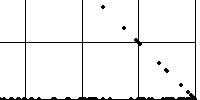
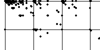
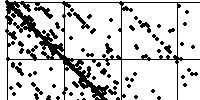
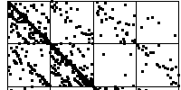
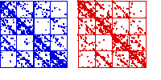
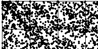
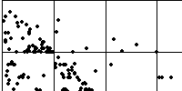
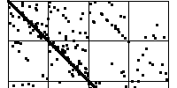

We shall compare IFS driven by (log of the) daily closing prices of the Frankfurt DAX from Jan 6, 1986, through Dec 31, 1997, giving 3128 data points, with several cartoons.
| Closing price plot: the IFS driven by the closing prices does not yield a useful pattern. |  |
| Diferences with equal-size bins: the IFS driven by the differences of the daily closing prices looks a bit more interesting, but equal-size bins are too sensitive to very large or very small values. |  |
| Diferences centered at 0: placing the middle bin boundary at 0 gives a better driven IFS, but the details of the structure depend on the placement of the other bin boundaries. |  |
| Cartoon with equal-size bins: here we drive an IFS with one of the self-affine cartoons, with equal-size bins. |  |
| Comparing cartoon and data: here we compare the driven IFS of the data and the cartoon, using addresses for most of the comparisons. |  |
| Cartoon with different bins: for another comparison, we dirve the IFS with the cartoon data, using different bins. |  |
| The effect of the random number sequence: here is the same cartoon generator, but with a different random number sequence. We see some similarities and some differences. |  |
| The effect of different turning points: just a taste of complicated questions - a lot to explore. |  |
Return to Driven IFS and Financial Cartoons